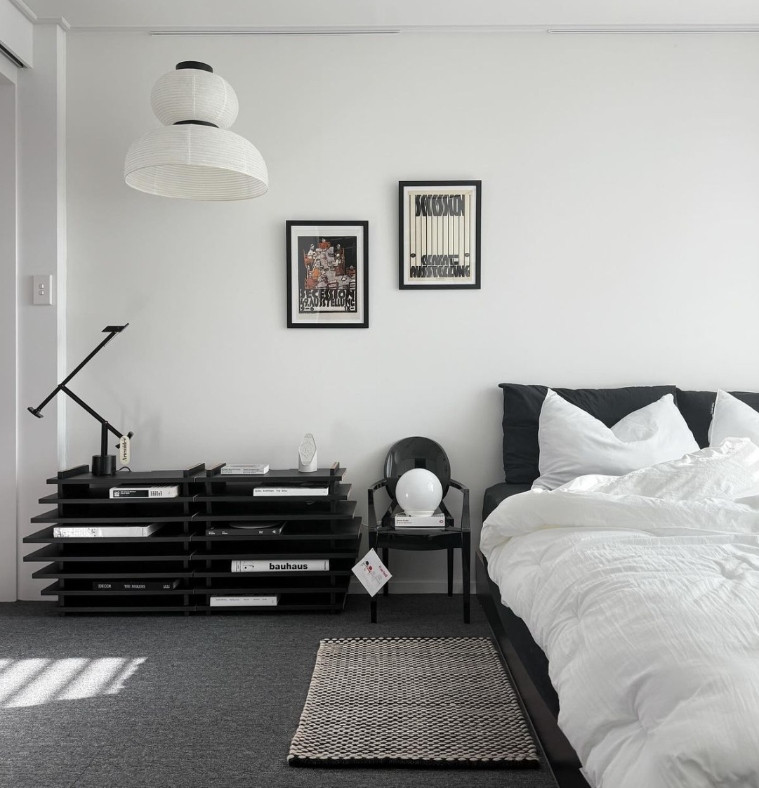
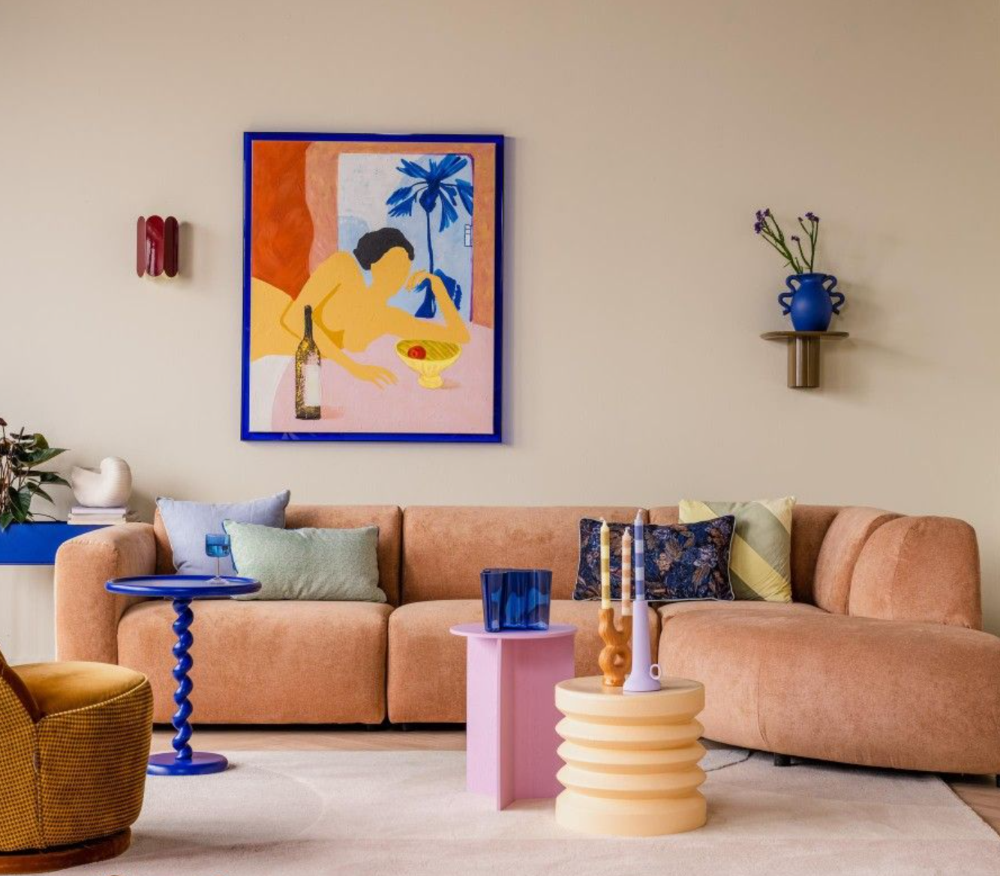

🖤인테리어 취향 검사🖤
Q1. 집에서 가장 중요하게 생각하는 분위기는?
깔끔하고 정돈된 느낌
따뜻하고 편안한 느낌
컬러나 소품으로 개성 표현하는 느낌
Q2. 벽 색깔을 고른다면?
화이트·그레이 같은 중립적인 색
베이지·우드톤과 잘 어울리는 따뜻한 색
포인트 주는 파스텔·비비드 컬러
Q3. 가구를 고를 때 가장 먼저 보는 것은?
선이 깔끔하고 기능적인 디자인
소재감(우드·라탄·패브릭 등)
컬러·디자인 독특함 또는 아기자기함
Q4. 집 꾸미기 할 때 당신은?
꼭 필요한 것만 두는 미니멀파
조명·우드 소품으로 분위기 살리는 타입
귀여운 소품을 다양하게 배치하는 타입
Q5. 거실 테이블을 산다면 어떤 스타일?
유리·메탈·화이트 같은 모던 스타일
우드 톤, 따뜻한 질감
컬러 포인트 / 둥근·아기자기 디자인
Q6. 집에 친구가 온다면 어떤 반응을 듣고 싶어?
“정돈돼 있고 깔끔하다!”
“아늑하고 편안하다~”
“개성 넘친다! 너 스타일 확실하네!”
Q7. 마음에 드는 공간 이미지?

깔끔한 무채색 공간
우드·따뜻한 조명 공간

컬러·소품이 살아있는 공간
결과 보기
🏠 홈으로 돌아가기